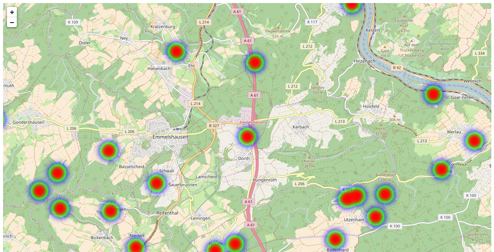

|
Guten Morgen |
Fangen wir an!
- Wer bin ich?
Ich kenne Joomla! noch nicht seit Mambo. Habe aber Joomla! in der Version 1.0 einmal installiert und mich mit Version 1.5 auch intensiver beschäftig. In der JUG Koblenz bin ich seit zwei Jahren aktiv. Ich bin Mapperin bei OSM - Was ist Leaflet?
Leaflet.js ist eine Open Source JavaScript-Bibliothek, die euch das Bereitstellen von Karten auf eurer Webseite einfach macht.
Neben OpenLayers und Google Maps API ist Leaflet eine der verbreitetsten Bibliotheken
Leaflet wird auf Webseiten wie GitHub, Pinterest, Spiegel Online und Flickr eingesetzt.
Beispiel - Was solltest du mitbringen?
Du solltest nicht vor Codebeispielen zurückschecken. Meine Beispiele sind aber einfach gehalten - wenn du nur sehen willst, was man alles mit Geodaten auf einer Website machen kann, dann bist du hier auch richtig.
- Was machen wir konkret in den nächsten 45 Minuten? Wir beginnen mit einer einfachen HTML-Datei und ich zeige euch, wie ihr in vier Schritten eine Karte anzeigen könnt! Dann gibt es ein bisschen Theorie - Was sind Koordinaten und wie werden digitale Karten technisch angezeigt? Danach bestücken wir die Karte mit Daten: Was sind Geodaten und was ist GeoJSON? Daten sind kein Selbstzweck, sie sollen eine Frage beantworten: Heatmaps und Choroplethenkarten Außerdem soll unsere Karte individuell wirken: Benutzerdefinierte Markern Open Data: Wo bekommst du Daten her, wenn du keine eigenen hast? Wenn wir noch Zeit haben sehen wir uns eine Leaflet Joomla! Erweiterung genauer an.
- Wenn ihr diese Präsentation später noch einmal ansehen möchtet, findet ihre einen Link auf der Website astrid-guenther.de.
Teil 1
In diesem Teil werden wir ...
- Als erstes erstellen wir mit 5 Zeilen Code eine Karte
- Dann sehen wir uns geografische Koordinaten genauer an.
- Das nächste Thema sind die Images für Karten und welche Techniken es gibt.
- Zum Schluss sehen wir uns kurz eine alternative Technik zur Kartendarstellung an.
In vier Schritten entsteht eine Karte!
Wir beginnen mit einer ganz einfachen HTML-Datei
|
Integriere die notwendigen JavaScript und Cascading Style Sheet (CSS) Dateien
|
Erstelle ein <div>-Element in dem die Karte angezeigt werden soll
Du musst dem <div>-Element eine ID und eine Höhe angeben.
|
- Nun wird es spannend: Erstelle das Karten-Objekt
L.map ist Shortcut Wichtig: Die ID als Parameter übergeben Das Anfügen der Methode setView() und das Festelegen der Zoom-Stufe ist optional.
|
Füge einen Karten-Layer zur Karte hinzu
Die Kartenschicht: http://{s}.tile.osm.org/{z}/{x}/{y}.png
|
Teil 1 - Exkurs 1 - Koordinaten auf der Erde
Koordinaten
|
Breitengrade oder Breitenkreise

|
|
Längengrade oder Längenkreise

|
|
Schreibweise von geografischen Koordinaten
- Normalerweise eine von zwei Schreibweisen
Das Sexagesimalsystem (Wikipedia) basiert auf der Zahl 60
So hat beispielsweise die Zugspitze die Koordinaten 47°25′16″N, 10°59′7″O. Das Dezimalsystem basiert auf der Zahl 10.
Beispielsweise werden die Koordinaten der Zugspitze mit 47.4211, 10.9852 angegeben. - Koordinaten noch weiter vereinfachen Orten auf der West- und Südhalbkugel wird in der Regel ein Minus (-) vorangestellt. Einem Ort, der auf dem westlichen Teil der Südhalbkugel liegt, könnten die Koordinaten -13.163333, -72.545556 zugeordnet werden.
- Historisch gewachsen: Die Reihenfolge bei der Angabe von Latitude und Longitude?
Früher war es üblich, dass die erste Stelle einer Koordinate den Breitengrad und die zweite Stelle den Längengrad beschrieb.
In der Mathematik ist die übliche Reihenfolge beim Arbeiten mit Koordinatensystemen: X-Wert | Y-Wert.
Reihenfolge lat, lon (Breitengrad, Längengrad): Leaflet, Google Maps API ...
Reihenfolge lon, lat (Längengrad, Breitengrad): GeoJSON, OpenLayers ...
Ein Problem bei der Arbeit mit sphärischen Koordinatensystemen:
Teil 1 - Exkurs 2 - Karten aus Kacheln
Wie weiß Leaflet welche Kacheln angezeigt werden sollen
Vektor oder Pixelgrafik?
Theoretisch ist dies für Vektorkarten möglich. Praktisch ist dies aber problematisch.
- Browserkompatibilität
- Rechenzeit - Objekte die über die ganze Welt verteilt sind ...
Aus diesem Grund werden die Karten in der Regel in kleinen Ausschnitten im Vorfeld berechnet und in einem Rasterformat gespeichert.
Dies macht übrigens auch Google Maps so.
Zoomstufe 0; Kachelanzahl: 1
Kachelbreite 40.038 km; 1 Pixel entspricht 156 km
Zoomstufe 1; Kachelanzahl: 4
Kachelbreite 20.019 km; 1 Pixel entspricht 78 km
Zoomstufe 2; Kachelanzahl: 16
Kachelbreite 5.005 km; 1 Pixel entspricht 39 km

| Zoomstufe | Kachelanzahl | Die Kachelbreite entspricht | Ein Pixel entspricht |
|---|---|---|---|
| 0 | 1 | 40.038 km | 156 km |
| 1 | 4 | 20.019 km | 78 km |
| .. | .. | .. | .. |
| 18 | 69 Mrd. | 153 m | 0,6 m |
| 19 | 275 Mrd. | 76 m | 0,3 m |
Die vollständige Tabelle findet Ihr unter der Adresse http://wiki.openstreetmap.org/wiki/Zoom_levels.
http://{s}.tile.osm.org/{z}/{x}/{y}.png
https://{s}.tile.thunderforest.com/landscape/{z}/{x}/{y}.png?apikey=x

http://{s}.tile.osm.org/{z}/{x}/{y}.png
https://{s}.tile.thunderforest.com/landscape/{z}/{x}/{y}.png?apikey=x

Thunderforest (https://thunderforest.com/)
API Key notwendig
|
Stamen (https://stamen.com/)
Künstlerische Karten
Eine zusätzliche JavaScript-Datei ist notwendig. |
Weitere Anbieter:
http://wiki.openstreetmap.org/wiki/Tiles
OpenCycleMap - OpenSkiMap - OpenSeeMap
Teil 1 WMS Service
Images als Layer – Web-Map-Service
Du hast eine Satellitenaufnahme und möchten diese als Layer verwenden.
- Eine Möglichkeit wäre ein Umwandeln dieser Satellitenaufnahme in 275 Milliarden Kacheln - es gibt alternative Techniken.
-
Eine Alternative zur beschriebenen Kachel-Technik ist der
Web-Map-Service. - Ein Web-Map-Service (WMS) ist eine Schnittstelle die Auszüge aus Landkarten über das Internet anbietet.
- Die Anfrage liefert ein georeferenziertes Rasterbild zurück.
Beispielweise bietet der Deutsche Wetterdienst WMS Dienste mithilfe der Open Source Software Geoserver.
Die Karten des DWD kennt Ihr sicher. Neben den amtlichen Warnungen gibt es auch Karten zu anderen Themen wie Pollenflug Gefahrenindex.
<!DOCTYPE HTML>
<html>
<head>
<title>Eine OSM Karte mit Leaflet</title>
<link rel="stylesheet" href="../leaflet/leaflet.css" />
<script src="../leaflet/leaflet.js"></script>
</head>
<body>
<div style="height: 700px;" id="mapid"></div>
<script>
var mymap = L.map('mapid').setView([50.27264, 7.26469], 7);
L.tileLayer('http://{s}.tile.osm.org/{z}/{x}/{y}.png').addTo(mymap);
var dwd = L.tileLayer.wms("https://maps.dwd.de/geoserver/dwd/wms", {
format: 'image/png',
transparent: true,
layers:'dwd:Warngebiete_Kreise',
attribution: "Deutscher Wetterdienst"
}).addTo(mymap);
var dwd = L.tileLayer.wms("https://maps.dwd.de/geoserver/dwd/wms", {
format: 'image/png',
transparent: true,
layers:'dwd:Warnungen_Gemeinden_vereinigt',
attribution: "Deutscher Wetterdienst"
}).addTo(mymap);
</script>
</body>
</html>
Erinnert ihr euch an den 27. Juli 2017?

true übergeben und Option format mit 'image/png' belegen.
Weitere Informationen beim Deutschen Wetterdienst.
|
In diesem Teil haben wir ...
- Als erstes haben wir mit 5 Zeilen Code eine Karte erstellt
- Wir haben uns geografische Koordinaten genauer angesehen
- und wir wissen nun wie Karten erstellt werden.
Teil 2
In diesem Teil werden wir ...
- die verschiedenen Leaflet-Objekt voneinander abgrenzen.
Die Karte mit Daten bestücken
Ein Punkt
Objekte vom Typ Point sind in Leaflet nicht zur Anzeige gedacht.
|
Ein Marker
Die Leaflet Klasse Marker wird verwendet, um anklickbare und/oder verschiebbare Symbole auf einer Karte anzuzeigen.
|
Eine Polyline
Linien kannst du in Leaflet mit der Klasse Polyline erstellen. Als Optionen kannst du fast alle CSS-Eigenschaften mitgeben.
|
Ein Polygon
Ein Polygone ist eine geschlossene Linie – also eine Linie die einen Innenbereich von einem Außenbereich abtrennt. Leaflet schließt automatisch!
|
Als Parameter gibst du für das Rechteck immer die diagonal versetzten beiden Ecken an. Dabei ist es egal, in welcher Reihenfolge du diese angibst.
|
Ein Circle
Ein Kreis wird anhand seines Mittelpunktes und seines Radius definiert.
|
Achtung: In früheren Leaflet-Versionen gabe es hierfür separate Elemente!
Mehrere Polylines automatisch auf einem Layer
Das Setzen von Klammern beim Arbeiten mit Polygon Objekten und Polyline Objekten die mehrere Objekte gleichzeitig auf einem Layer erstellen, kann sehr herausfordernd sein. Vorteil: Styles können zusammen zugewiesen werden undfitBound() ist problemloser.
|
Mehrere Polygone auf einem Layer sind praktisch ein Polygon
In diesem Beispiel siehst du nun auch, wie du mit der MethodebindPopup() ein Pop-up zu einem Element hinzufügen kannst.
Anwendungsbeispiel: Länder mit Kolonien.
|

|
|
|
|

|
|
Eine LayerGroup
Legt den Schwerpunkt auf Methoden zum Gruppieren.
|
myLayerGroup.removeLayer(polyline); entfernt
alle drei Element auf einen Schlag.
Ein FeatureGroup
Eine FeatureGroup erweitert die LayerGroup, macht es einfach Stylesheets auf alle Mitglieder anzuwenden und ermöglicht es Ereignisse zu verarbeiten.
|
Ein Popup
In einem Pop-up Fenster könnt ihr alle HTML-Tag nutzen.Pop-ups werden automatisch geschlossen.
|
In diesem Teil haben wir ...
- die wichtigsten Leaflet-Objekt voneinander abgegrenzt.
Teil 3
In diesem Teil werden wir ...
- Als Erstes sehen wir uns an, warum GeoJSON entwickelt wurde.
- Als Nächstes vergleichen wir die einzelnen Elemente mit den Objekten, die uns Leaflet zur Verfügung stellt.
- Und zu guter Letzt probieren wir die Methoden aus, die Leaflet euch – spezielle für das Verarbeiten von GeoJSON-Daten – anbietet.
Teil 3 - Exkurs - Warum gibt es GeoJSON
Die Wurzeln von GeoJSON
XML wurde 1998 veröffentlicht, um Daten zwischen Maschinen austauschen zu können.
-
Durch das Tag-System von XML werden oft kleine Datenbestände sehr aufgebläht und sind so unübersichtlich.
<joomlers> <number>1721</number> <vorname>Astrid Günther</vorname> </joomlers> „joomlers“: { „number“: „1721“, „vorname“: „Astrid Günther“ }, - Da JSON selbst gültiges Javascript darstellt, kann es direkt ausgeführt werden.
- Im Gegensatz zu XML ist JSON nicht beschreibend oder deklarativ sondern eine Syntax-Konvention.
- GeoJSON ist ein JSON Format, das sich auf Geodaten spezialisiert hat - wieder beschreibend ist ....
JSON
Im Dezember 1999 wurde die erste Formatspezifikation verabschiedet.Im Juni 2017 wurde die 8. Edition des Standards ECMA-262 veröffentlicht.
http://json.org/
GeoJSON
Im Juni 2008 wurde die erste Formatspezifikation verabschiedet.Im August 2016 wurde die RFC (Requests for Comments) 7946 veröffentlicht.
http://geojson.org/
Position
- Das wichtigste Element beim Arbeiten mit Geodaten ist die Beschreibung des Punktes auf der Erde, dem die Geodaten zugeordnet werden.
- Diesen Wert kennen wir auch unter dem Namen Koordinate.
- Eine Koordinate ist eine Zahlenkombination. Jede Zahl in einer Koordinate steht für eine Dimension.
- Die Koordinaten werden in JSON im Dezimalformat formatiert.
- Koordinaten in GeoJSON: [Länge, Breite, Höhe]Wir beschränken uns hier auf zwei Dimensionen | Die vierte Dimension ist die Zeit | Beachte die Reihenfolge
Point | Multipoint
Ein Point – also ein Punkt – ist die einfachste Geometrie in GeoJSON. Die genaue Schreibweise ist

|
|

|
|
LineStrings | MultiLineString
Um eine Linie darzustellen, benötigst du mindestens zwei Punkte. Die Linie ist dann die Verbindung zwischen diesen Punkten.

|
|

|
|
Linien und Punkte sind die beiden einfachsten Geometrieformen.
Punkte und Linien haben keine Fläche – somit gibt es auch kein
Außen und kein Innen.
Polygone
Polygone verfügen über eine Fläche. Es gibt also einen Innenbereich, der sich von einem Außenbereich unterscheidet.Und hinzu kommt: Der Innenbereich kann Löcher haben!

|
|

|
|
Multipolygon

|
|

|
|
GeometryCollection
{
"type": "Feature",
"geometry": {
"type": "GeometryCollection",
"geometries": [{
"type": "Point",
"coordinates": [0, 0]
}, {
"type": "LineString",
"coordinates": [[0, 0], [1, 0]]
}]
},
"properties": {
"name": "Der Name dieser GeometryCollection"
}
}
Feature
{
"type": "Feature",
"geometry": {
"type": "Polygon",
"coordinates": [[30, 20], [45, 40], [10, 40], [30, 20]]
},
"properties": {
"prop0": "value0",
"prop1": {"this": "that"},
"prop2": true,
"prop3": null,
"prop4": ["wert1", "wert2", "wert3"],
"prop5": 0.0
}
}
FeatureCollection
{
"type": "FeatureCollection",
"features": [
{
"type": "Feature",
"geometry": {
"type": "Point",
"coordinates": [0, 0]
},
"properties": {
"name": "Der Name des Features"
}
}
]
}
Grenzen von GeoJSON
- GeoJSON hat kein Konstrukt das eine Komprimierung unterstützt.
- GeoJSON unterstützt die gleichen Datentypen wie JSON. JSON unterstützt nicht jeden Datentyp.
Beispielsweise kein Datum. - GeoJSON hat kein Konstrukt für die Anzeige von Pop-up-Fenstern wie Titel oder Beschreibung.
Ihr werdet aber später sehen, wie Leaflet euch bei der Erstellung von Pop-up-Fenstern unterstützt. - GeoJSON hat keine Geometrie vom Typ Kreis
– oder irgendeine andere Art von Kurve. - In GeoJSON kannst du den einzelnen Koordinaten – also den Positionen, keine eigene Eigenschaft zuweisen.
Wenn du eine LineString-Darstellung eines Trainingslaufs hast mit Puls und Herzfrequenz ...
Teil 3 GeoJSON in Leaflet
GeoJSON in Leaflet
L.geoJSON erweitert L.featureGroup
Ein Feature
Das Einlesen von Daten im GeoSON Format ist kein Hexenwerk.Hier habe ich ein Feature fest kodiert.
|
Eine FeatureCollection
|
toGeoJSON() - GeoJSON aus Leaflet exportieren
und
addData() - Daten nachträglich zu einem GeoJSON Layer hinzufügen.
|
Marker
|
Eine GeoJSON Layer reagiert auf Ereignisse
|
onEachFeature()
onEachFeature ist eine Option die einmal für jedes im Layer vorhandene GeoJSON Objekt vom Typ Feature aufgerufen wird.Zusätzlich seht ihr in diesem Beispiel, wie ihr auf die Eigenschaften eines Features zugreifen könnt.
|
Leaflet bietet euch noch weitere Optionen. Vielleicht mögt ihr
Marker selbst individuell erstellen. Dann solltet ihr euch pointToLayer ansehen.
Daten filtern könnt ihr mit der Option filter
Falls ihr Koordinaten umrechnen müsst hilft euch coordsToLatLng.
In diesem Teil haben wir ...
- Als Erstes haben wir GeoJSON genauer angesehen.
- Als Nächstes haben wir die Geoobjekte in GeoJSON und Leaflet verglichen.
- Und zu guter Letzt haben wir GeoJSON in Leaflet eingesetzt.
- Eine Karte mit Daten füllen können wir nun. Im nächsten Kapitel sehen wir uns an, wie wir mit den Daten auch Aussagen treffen oder Fragen beantworten können.
Teil 4
In diesem Teil werden wir ...
- ... die in den vorangehenden Kapiteln besprochenen Objekte zum visualisieren einsetzen.
- ... Plugins kennenlernen, die uns beim Erstellen von Heatmaps unterstützen
- ... sehen wie wir mit einer Leaflet Karte interagieren und diese animieren können.
- ... Choroplethenkarte von Heatmaps abgegrenzt und auf diesen absolute und relative Werte darstellt.
Heatmaps und Choroplethenkarten
Heatmap / Wärmebild
- In der grafischen Darstellung kristallisieren sich besonders markante Werte oft schnell heraus.
- Eine Heatmap ist im Grunde genommen ein Diagramm, mit dem Daten visualisiert werden.
- Heatmaps färben Bereich unterschiedlich, wenn die Intensität oder die Dichte des untersuchten Objektes unterschiedlich ist.
Möchtet ihr gerne wissen, wie die Darstellung einer Heatmap die die Dichte visualisiert technisch umgesetzt
wird?
Vereinfacht ausgedrückt wird ein Grid über die Karte gelegt.
Leaflet.heat - Eine Heatmap die die Dichte darstellt
https://github.com/Leaflet/Leaflet.heat
|
blur (Wert für die Schärfe der Darstellung des Punktes)

blur: 1 |

blur: 40 |
maxZoom
|

maxZoom: 13 |

maxZoom: 6 |
Die Methoden eines Leaflet.heat Layers
|
heatmap.js - Eine Heatmap die die Intensität darstellt
https://github.com/pa7/heatmap.js
|
Intensitätspunkte bei einem maximalen Wert von 100
Interaktive Heatmaps
Ihr könnte es Benutzern ermöglichen Punkte hinzuzufügen.
|
Animierte Heatmaps
setInterval() -> Wiederholter Aufruf einer Funktion mit einem fest definierten Intervall zwischen den einzelnen Aufrufen.
|
Choroplethenkarten
- Die Choroplethenkarten ist eine Variante der Heatmap.
- In einer Choroplethenkarte folgen die Farbflächen keinem starren Rechteckraster, sondern sind Gebieten auf einer Landkarte zugeordnet.
- Das Schöne ist, dass wir mit Leaflet keine zusätzlichen Plugins benötigen. Leaflet ist wie dafür gemacht, GeoJSON Daten als Choroplethenkarte anzuzeigen.
- Choroplethenkarten werden in Deutschland auch Flächenkartogramme oder Flächenwertstufenkarten genannt.
Open Data - GeoJSON Utilities
Open Data, also offene Daten, sind Daten die von jedem ohne jegliche Einschränkungen verwendet und weitergegeben werden dürfen. Beispiel: http://opendatalab.de/projects/geojson-utilities/
|
Eine Choroplethenkarten die absolute Werte darstellt
Landkreise in Rheinland-Pfalz und deren Bevölkerungsanzahl
|
Eine normalisierte Choroplethenkarten
Landkreise in Rheinland-Pfalz und deren Bevölkerungsdichte
|
In diesem Teil haben wir ...
- ... die in den vorangehenden Kapiteln besprochenen Objekte zum visualisieren eingesetzt.
- ... Plugins kennen gelernt, die Sie beim Erstellen von Heatmaps unterstützen
- ... gesehen wie mit einer Leaflet Karte interagiert werden kann und wie sie animiert werden kann.
- ... Choroplethenkarte von Heatmaps abgegrenzt und auf diesen absolute und relative Werte darstellt.
Teil 5
In diesem Teil werden wir ...
- Wir werden uns einen benutzerdefinierten Marker in Leaflet ansehen.
- Wir werden sehen wir beim Erstellen eines Marker Objektes Vererbung ausnutzen können.
- Wir werden verschiedene Plugins ausprobieren.
Benutzerdefinierte Marker
Ein benutzerdefinierter Marker
|
Ein benutzerdefinierter Marker
|
Viele benutzerdefinierte Marker
... mithilfe der Vererbung schnell erstellt.
|
Das Plugin BeautifyMarker
Leider habt ihr keine schöne Grafik und auch keine Zeit eine zu erstellen.https://github.com/marslan390/BeautifyMarker
|
Marker Clustern
Ihr habt ganz viel Marker ...https://github.com/Leaflet/Leaflet.markercluster
|
Animierte Marker 1 - Ein hüfpender Marker
https://github.com/maximeh/leaflet.bouncemarker
|
Animierte Marker 2 - Ein beweglicher Marker
https://github.com/openplans/Leaflet.AnimatedMarkerdistance -> Meter; intervall -> Millisekunden
|
Animierte Marker 3 - Der Marker bewegt sich und hüpft aus dem Bild
|
Leaflet Data Visualization Framework (DVF)
https://github.com/humangeo/leaflet-dvf/Das Ziel dieses Frameworks ist es rohe Daten in überzeugende Karten zu verwandeln.
|
In diesem Teil haben wir ...
- Wir haben uns einen benutzerdefinierten Marker in Leaflet ansehen.
- Wir haben gesehen wie wir beim Erstellen eines Marker Objektes Vererbung ausnutzen können.
- Wir haben verschiedene Plugins ausprobieren.
Teil 7
In diesem Teil werden wir ...
- ... uns die Karten die ESRI (Environmental Systems Research Institute) anbietet ansehen.
- ... gucken was sich hinter dem Begriff Shapefile versteckt.
- ... ESRI Webservices kennen lernen.
- ... L.esri.DynamicMapLayer.
- ... Geocoding.
- ... Mit Query Layern nur die passenden Daten laden.
ESRI
ESRI ist ein US-amerikanischer Softwarehersteller. ESRI hat sich auf Geoinformationssystemen (GIS) spezialisiert. Das Unternehmen hat unter anderem die Anwendung ArcGIS erstellt und das Dateiformat Shapefiles eingeführt.
BaseLayer
|
Shapefiles
Das Dateiformat Shapefile wurde von der Firma ESRI für die Software ArcView entwickelt.Shape Dateien sind speziell für die Verarbeitung von Geodaten entwickelt worden. Ein Shapefile ist keine einzelne Datei.
Eine Datei mit der Endung .shp dient zur Speicherung der Geometriedaten.
Eine Datei mit der Endung .dbf enthält Attribute oder Eigenschaften.
Eine Datei mit der Endung .shx dient als eine Art Index. Mithilfe dieser Datei sind die Geometriedaten in der Datei .shp mit den Eigenschaften in der .dbf-Datei verknüpft.
Shapefiles 1
Schienennetz der Deutschen Bahn Verwaltungsgrenzen Rheinland Pfalz Verwaltungsgrenzen Deutschland bei ESRI selbst
|
Shapefiles 2
|
Shapefiles 3
|
Shapefiles 4
|
ESRI Webservices -
Geocoding, DynamicMaps, QueryLayerWas ist Geocoding?
Geocoding bezeichnet die Umwandlung von Adressen wie
Kirchstraße 13, 56571 Muster
in geografische Koordinaten wie
50.423021 Breite und 7.083739 Länge.
ESRI Webservice - Geocoding.geosearch()
Es gibt jede Menge Optionen - beispielsweise useMapBounds
|
ESRI Webservices - Geocoding.geocode().text(address).run()
../code/5/index_937.html?a=56751 Gering
|
ESRI Webservices - Geocoding.reverseGeocode()
|
ESRI Webservice
|
ESRI Webservices - FeatureServer
Für das nachfolgende Beispiel habe ich Daten des Geoportals Köln genutzt. https://geoportal.stadt-koeln.de/arcgis/
|
ESRI Webservice
|
In diesem Teil haben wir ...
- ... uns die Karten die ESRI (Environmental Systems Research Institute) anbietet angesehen.
- ... geguckt was sich hinter dem Begriff Shapefile versteckt.
- ... ESRI Webservices kennen lernen.
- ... Geocoding.
- ... L.esri.DynamicMapLayer.
- ... Query Layer.
- Was haben wir gemacht Wir haben zu Beginn in vier Schritten eine einfache Karte erstellt! Dann gab es ein bisschen Theorie - Was sind Koordinaten und wie werden digitale Karten technisch angezeigt? Danach bestückten wir die Karte mit Daten und haben uns Geodaten und GeoJSON angeshen Im Anschluss haben wir die Daten visualisiert und Frage beantworten mit Heatmaps und Choroplethenkarten beantwortet Benutzerdefinierte Markern waren ein weiteres Thema. Wir wollen Karten individuell gestalten. Open Data und ESRI bieten Daten, wenn wir selbst keine haben. Wie ihr das alles in eine Erweiterung einbaut, zeigt euch der Joomla Entwickler Workshop.